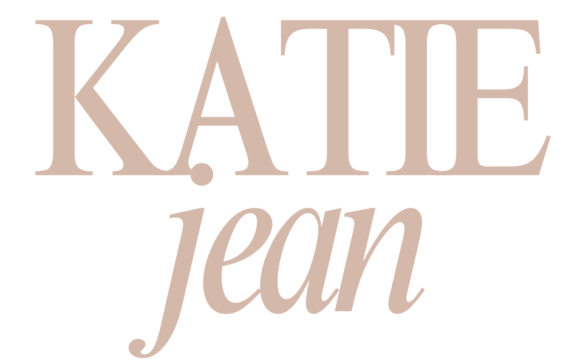

The 5 Day Back Reset
Ready to take the first step towards changing your pain story?
Before we start the course, we're going to take a step back and look at the whole picture for a second. This questionnaire captures what's been driving your pain, pinpoints the areas that need attention, and gives us a clear picture of your nervous system activation — because understanding that is foundational to pain re-training.
It will take around five minutes. Answer as things feel for you right now.
The 5 Day Back Reset
Your pain profile is ready — pop your details in below and I'll take you straight to your results. I'll also send them to your inbox so you have a private link to come back to any time during the course.